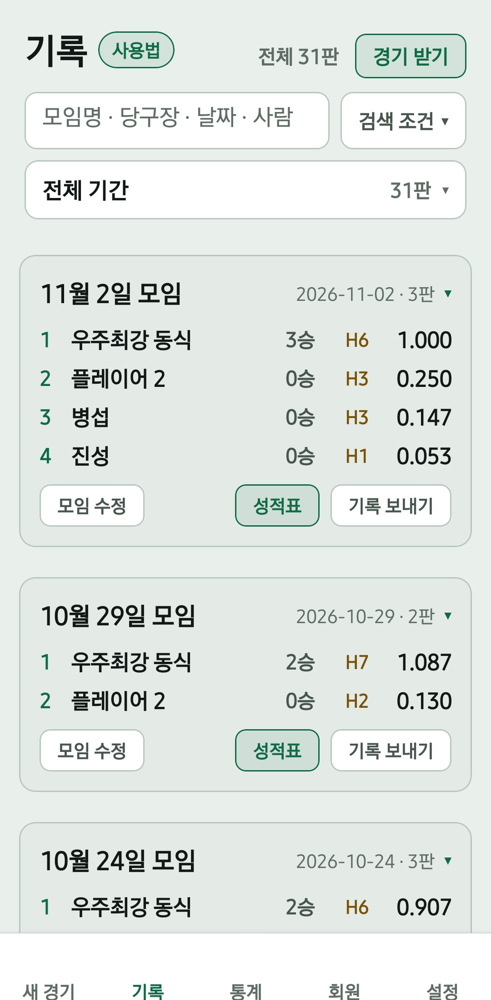
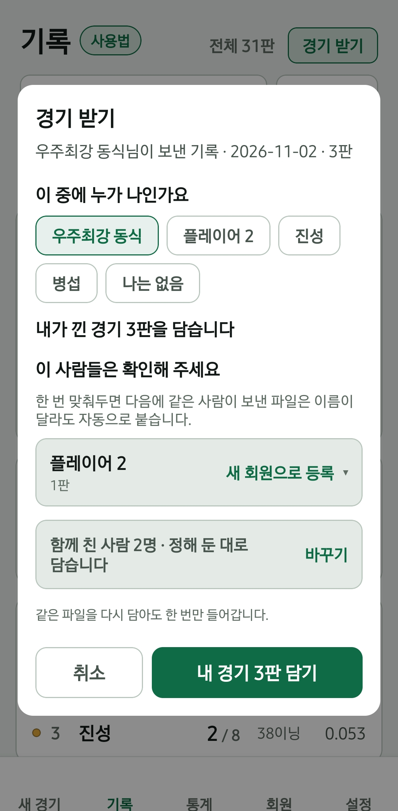

넷이 쳐도 점수판은 폰 하나로 봅니다. 그날 기록은 그 폰에만 남으므로, 나머지 사람의 에버리지에는 잡히지 않습니다. 기록 주고받기는 이 기록을 각자의 폰에 담는 기능이며 무료입니다.
1. 점수판을 켠 사람: 기록 보내기
- 앱 하단의 기록 탭을 엽니다.
- 보낼 모임에서 기록 보내기를 누릅니다.
- 공유 화면에서 단톡방을 고릅니다. 모임의 경기가 파일 하나로 올라갑니다.

2. 나머지 사람: 파일을 눌러 에버보드로
- 단톡방의 파일을 누르고 열기에서 에버보드를 고릅니다. 아이폰은 열기를 누른 다음 오른쪽 아래 공유 버튼에서 에버보드를 고릅니다.
- 에버보드가 열리며 경기 받기 창이 바로 뜹니다.
- 이 중에 누가 나인가요에서 내 이름을 짚습니다.
- 내 경기 N판 담기를 누릅니다.
내가 낀 경기만 담는 것이 기본이고, 모임 전체를 담도록 바꿀 수도 있습니다. 담은 경기는 내 에버리지와 상대 전적에 반영됩니다.
목록에 에버보드가 없으면 파일을 폰에 저장한 뒤, 에버보드 기록 탭 오른쪽 위의 경기 받기를 눌러 그 파일을 고르세요.

이름이 폰마다 달라도 되나요?
됩니다. 내 폰의 ‘두현’이 다른 폰에서는 ‘본인’일 수 있습니다. 담을 때 이 사람들은 확인해 주세요에서 내 회원과 짝을 지어 주면, 다음부터는 같은 사람이 보낸 파일을 이름이 달라도 자동으로 잇습니다.
같은 파일을 두 번 담아도 경기는 한 번만 들어옵니다. 단톡방에 한 번 올려 두고 각자 편할 때 받으면 됩니다.
성적표, 기록 보내기, 백업은 무엇이 다른가요?
| 기능 | 보내는 것 | 쓰임새 |
|---|---|---|
| 성적표 | 글 | 단톡방에서 그날 결과를 읽습니다. |
| 기록 보내기 | 모임 경기 파일 | 같이 친 사람의 앱에 경기를 담습니다. |
| 백업 | 내 기록 전체 파일 | 새 기기로 내 기록을 옮깁니다. |
파일은 사용자가 고른 메신저나 저장소로 전달되며, 에버보드 서버에 올라가지 않습니다. 백업은 백업과 복원 안내를 참고하세요.
상대 전적과 모임 성적표 활용하기